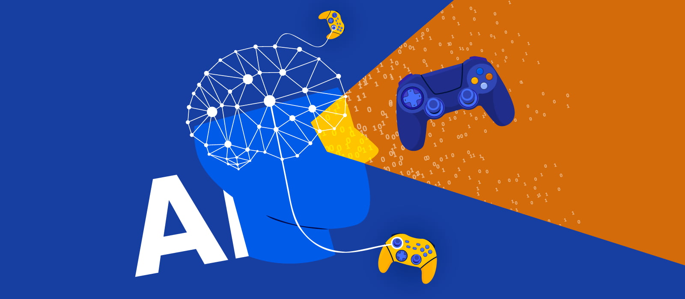

Application of AI in Video Games
What is the Application?
Procedural Content Generation (PCG) uses AI algorithms to automatically create game content such as levels, maps, characters, quests, and even music. Instead of manually designing every element, developers use AI to generate diverse and dynamic experiences, making games more replayable and scalable.
Examples include:
- Randomly generated dungeons in Minecraft or Rogue-like games.
- AI-created storylines or dialogue in role-playing games.
- Adaptive music and soundscapes based on player behavior.
Data and Security Issues:
AI in gaming can raise several concerns:
- Player Data Collection: AI systems often analyze player behavior to personalize content. This requires collecting gameplay data, which can be sensitive if linked to personal accounts.
- Privacy Risks: If data is stored or shared insecurely, it could be exposed to third parties or used for targeted advertising without consent.
- Cheating and Exploits: AI-generated content might be predictable or exploitable, allowing players to cheat or manipulate game systems.
Positive Impacts:
Society
- Accessibility: AI can tailor difficulty levels and gameplay styles to individual players, making games more inclusive.
- Education and Therapy: Games with AI-generated content are used in learning environments and therapeutic settings to engage users in personalized ways.
Economy
- Cost Efficiency: Reduces the need for large design teams, lowering development costs and enabling indie developers to create rich content.
- Job Creation: Opens new roles in AI game design, testing, and ethics.
Culture
- Creative Expansion: AI allows for endless storytelling possibilities, enriching game narratives and cultural expression.
- Global Reach: Procedural generation supports localization and cultural adaptation of games for diverse audiences.
Environment
- Digital Sustainability: AI can optimize game assets and reduce server loads, lowering energy consumption in online gaming.
Negative Impacts:
Society
- Addiction Risks: Personalized and endlessly generated content can increase screen time and contribute to gaming addiction.
- Reduced Human Creativity: Overreliance on AI may diminish the role of human artists and writers in game development.
Economy
- Job Displacement: Automation of content creation could reduce demand for traditional game designers and artists.
- Market Saturation: Easier content generation may flood the market with low-quality games.
Culture
- Homogenization: AI-generated content might lack cultural nuance, leading to generic or insensitive representations.
- Ethical Concerns: AI-driven narratives could unintentionally reinforce stereotypes or biases.
Environment
- Training Costs: Developing AI models for PCG can be resource-intensive, requiring powerful hardware and energy.